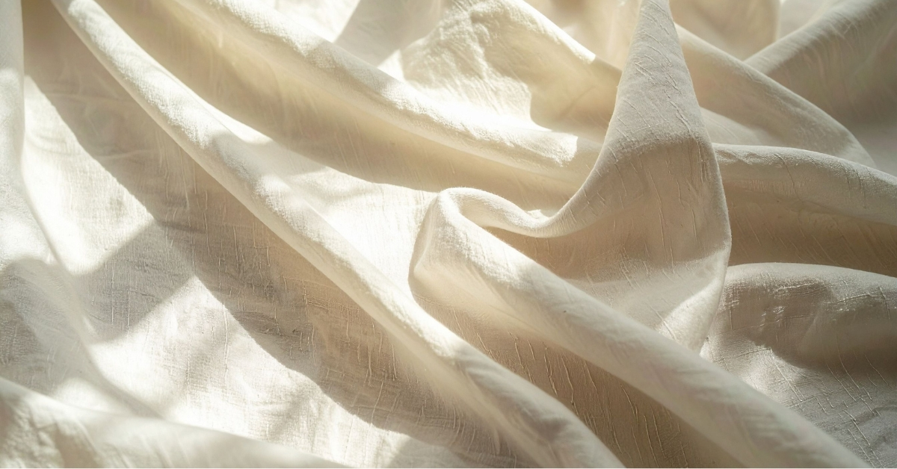
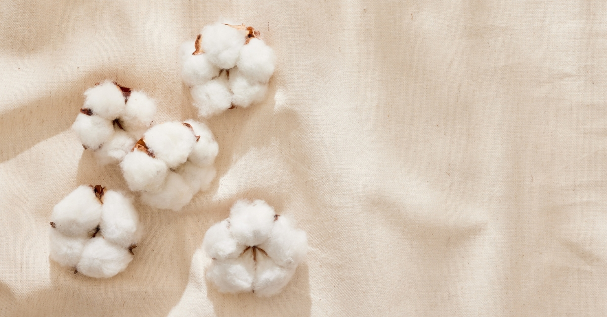
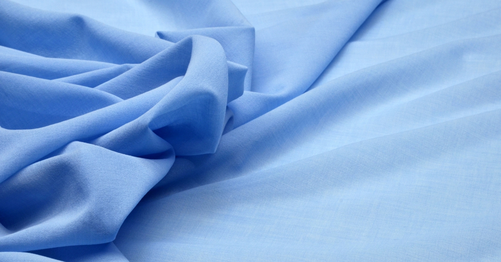
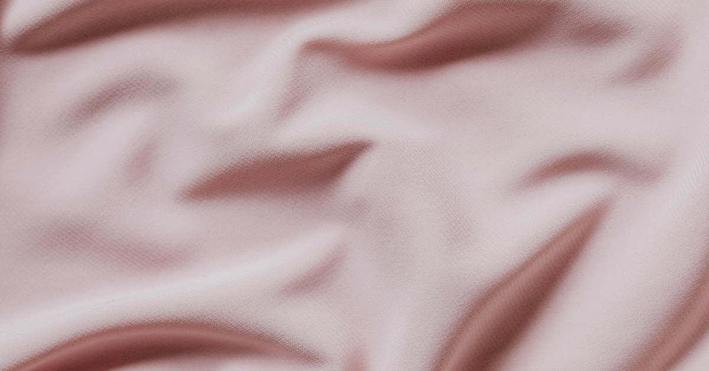

A tudatos ruhavásárlókat alapvetően két nagy csoportra lehet osztani: azokra, akik az első mozdulattal a belső címkét és az anyagösszetételt keresik, és azokra, akiket inkább csak a fazon vagy a minta fog meg. Mindkét megközelítés teljesen érthető, hiszen a saját döntésünk, hogyan választunk. Van azonban egy közös cél, ami mindannyiunkat összeköt: szeretnénk jól és kényelmesen érezni magunkat abban, amit magunkra öltünk.
A nyári hőségben ez a kényelem hatványozottan felértékelődik. A kánikulában elkerülhetetlenül izzadunk, a bőrünk pedig sokkal érzékenyebbé válik, ami a nem megfelelő anyagok miatt kellemetlen bőrirritációhoz vagy csalánkiütéshez is vezethet. Egy kis alapanyag-ismeret és tudatosság ilyenkor aranyat ér. Most sorra veszünk hat olyan textilfajtát, amelyekkel a leggyakrabban találkozhatsz a nyári ruhák válogatása közben.
A lenvászon egy tiszta, növényi eredetű alapanyag, amelyet a len szárából nyernek. A nyári gardrób abszolút királya, hiszen olyan egyedülálló tulajdonságokkal büszkélkedhet, amiket semmi más nem tud utánozni. A tapintása és a textúrája jellegzetes, már ránézésre is a tengerparti szabadságot és a szellős könnyedséget idézi. Úgy képes magába szívni a testünk izzadságát, hogy a ruhán egyáltalán nem hagynak csúnya nyomot a nedves foltok. A mosást kifejezetten szereti, minden egyes tisztítás után egyre puhábbá és kellemesebbé válik. Bár híres arról, hogy pillanatok alatt képes csontig gyűrődni, a lenvászon esetében ez a kis ziláltság a stílus és az elegancia része. Gyakran keverik pamutszálakkal is, ilyenkor egy kicsit teltebb, de lényegesen puhább anyagot kapunk.

A lenvászon ruhákba valóban érdemes beruházni: rendkívül hosszú életűek, bírják a gyűrődést (szó szerint), és tökéletes komfortot biztosítanak az érzékeny bőrűeknek is.
A pamut vitathatatlanul a legelterjedtebb és legnépszerűbb természetes textil a világon, amelyet a gyapotnövény gubóiból nyernek ki. Népszerűségének titka a rendkívüli strapabírásában és sokoldalúságában rejlik, hiszen a legvékonyabb nyári pólótól kezdve a vastag farmerig szinte bármi gyártható belőle. Igen, a nyári estéken előkerülő vékonyabb farmerszövetek is pamutból vannak! Könnyen színezhető, ám a mosások során a színek hajlamosak kissé megkopni, így a tisztítása odafigyelést igényel. Érdemes tudni, hogy a hagyományos pamutot a termesztés és a feldolgozás során is rengeteg vegyi anyaggal és növényvédő szerrel kezelik. Ha nagyon kényes vagy allergiára hajlamos a bőröd, érdemes célzottan a biopamutból készült darabokat vadásznod.

A pamut ruhák igazi klasszikusok: puhák, kiválóan szellőznek, nagyszerű a nedvességfelvevő képességük, és ha pamut zoknit vagy felsőt hordasz, a kellemetlen szagok megtapadásától sem kell tartanod.
A viszkózt sokan hajlamosak a tisztán műszálas anyagok közé sorolni, pedig valójában egy természetes alapú, de mesterséges eljárással készülő textíliáról van szó. Az alapját a fák rostjaiból kinyert cellulóz adja – lényegében ugyanaz az alapanyag, amiből a papírt is gyártják. Ezt a növényi masszát vegyi úton alakítják át finom szálakká, amikből aztán az alapszövet készül. Nagyon hálás anyag a textiliparban, mert gyönyörűen festhető és kiválóan tartja a színét. Bár hajlamos a gyűrődésre, cserébe rendkívül tartós. Tudtad, hogy olyan elegáns szöveteknek is a viszkóz az alapja, mint a szatén, a taft vagy a brokát?

Ha viszkózból készült inget, blúzt vagy lenge ruhát viselsz, azonnal érezni fogod az előnyeit: pillekönnyű, hűvös tapintású, remekül elszívja a nedvességet, és egyáltalán nem irritálja még a legérzékenyebb bőrt sem.
A neve világosan utal rá, hogy egy mesterségesen előállított anyagról van szó, amit a valódi selyem luxusának megfizethetőbb pótlására hoztak létre. Finom, elegáns esése és légies könnyedsége miatt mégis előszeretettel alkalmazzák a nyári divatban. A műselymek családján belül külön kategóriát képez a viszkóz alapú változat, míg az acetát vagy a rézoxid eljárással készülők egy kicsit más vegyi folyamat eredményei. Leggyakrabban lenge női ruhák, szoknyák és elegánsabb blúzok alapanyagaként találkozhatunk velük. Mivel a festéket csodásan magukba zárják, elképesztően élénk mintákkal és színpompás variációkban pompáznak a vállfákon.
A poliészter a leggyakoribb szintetikus, azaz teljesen műszálas alapanyag, amellyel lépten-nyomon találkozhatunk. Népszerűsége abból adódik, hogy olcsón előállítható, nem gyűrődik, és remekül keverhető természetes szálakkal is. Kiváló víztaszító tulajdonsága miatt a sportruházat alapja, azonban a magas hőt egyáltalán nem bírja – a túl forró vasaló vagy mosás azonnal tönkreteheti az anyagszerkezetet. Bár a hétköznapokban praktikus lehet, a kánikulában futó nyári napokon inkább kerüljük a tiszta poliészter ruhákat. Mivel egyáltalán nem szellőzik, nem engedi át a párát, így az izzadság rátapad a bőrre, ami nemcsak kényelmetlen, de a kellemetlen testszagokat is felerősíti.
A modál a modern textilipar egyik legkedvesebb vívmánya, amely tulajdonképpen a viszkóz egy továbbfejlesztett, prémium változata. Alapját kizárólag a bükkfa rostjaiból kinyert cellulóz adja. Azért szeretik egyre jobban a nyári kollekciókban, mert a pamutnál is jobb a nedvszívó képessége, miközben selymesen puha, finom tapintású marad. Hatalmas előnye a sima viszkózzal szemben, hogy sokkal kevésbé hajlamos a makacs gyűrődésre, és számtalan mosás után sem veszít a puhaságából vagy a formájából, nem hajlamos a kibolyhosodásra.

Nyáron viselve olyan, mintha egy második bőr lenne rajtunk: hűsíti a testet, selymes fényével elegáns megjelenést kölcsönöz, és teljesen bőrbarát.
Ha vásárlás során egy kicsit körültekintőbb vagy, és tudatosan választod ki a ruháid alapanyagát, akkor olyan darabokkal gazdagodhatsz, amelyek hosszú éveken át hűséges társaságaid lesznek a gardróbban. Ezzel a figyelemmel nemcsak a saját komfortérzetedért teszel, hanem a környezetedért is. Ha pedig a fenntarthatóság útján még egy lépéssel tovább mennél, érdemes nyitott szemmel járnod a másodkézből származó nyári ruhák piacán is: a minőségi len, pamut vagy viszkóz kincsekre itt gyakran az eredeti ár töredékéért bukkanhatsz rá.
Olvasd el ezt is: Tavaszi színkavalkád 2026-ban: Frissítsd fel a gardróbod! — megmutatom a 2026-os tavaszi divat legnépszerűbb színeit és árnyalatait.